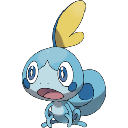

This tiny turtle Pokémon was my starter in the first ever game I owned. I was told that female versions of Squirtle would have better stats, and while I didn't really care about that, I kept restarting my Nintendo DS to get a female.
Many tries later, I decided I just wanted to play the game already and settled with a male Squirtle. It wasn't until my brother came around to see how far I'd gotten into the game that I realized the Squirtle was a shiny version of the cute ":}" faced Pokémon.
It wasn't until I caught another Pokémon that I noticed the glitter which flew around Squirtle when he came out of his Pokéball was unique to him. Being my starter Pokémon, he was in my team 99.9% of my playthrough. And of course, he evolved into a shiny Wartortle then a shiny Blastoise and "migrated" with me to the newer Pokémon games.
I kept him in my copy of Pokémon Pearl for the longest time because I enjoyed feeding him treats way too much. It was also the most enjoyable game for me so I wanted to keep my strongest Pokémon in there.
Murkrow
#199
Dark & Flying Type
When it comes to birds, corvids are some of the prettiest and smartest of the bunch.
Murkrow, the darkness Pokémon, is designed and named after them and also looks like it belongs in a Halloween store. It's crest is shaped like a witch's hat and tail like a broom. Absolutely A+ design, they managed to make Murkrow look both soft to the touch and as sleek as the birds the Pokémon is based on.
I'm indifferent to Murkrow's evolution and it took a while to get used to the new hat/crest the Pokémon gains. The big puffy white feathers on it's chest are a plus, but aside from that I prefer the small bird that seems to live on a plane where October never ends.
Cherubi
#420
Grass Type
This cherry Pokémon is another one of my favorites mainly because of its design. Round bodies with eyes spread wide enough to fit a happy shaped mouth just scream "friend". Also, cherries aren't very tasty so I never have to feel guilty about eating something that looks like such a precious Pokémon. It's not even red like a cherry, either, but the pink makes it so much cuter! Plus, even if it is only one Pokémon, it has a second head that looks like it is taking a nap. Good. Cherubi deserves a nice nap. It's got little stub legs, too. I've never seen the Pokémon anime beyond a few episodes of the first season, so I have no idea how Cherubi walks. But, I have no doubt that it looks adorable waddling around.
Sobble

#???
Water Type
This water lizard Pokémon looks to always be on the verge of tears. Very relateable, very adorable. I don't plan on buying the new Pokémon game that Sobble will be in. I don't even own a Nintendo Switch. But, as soon as this Pokémon was announced, it stole a bit of my heart. Partly because I love all water type starters unconditionally (maybe not Oshawatt).
I believe Sobble will be able to survive anywhere thanks to its puppy dog eyes, which surely would inspire any Pokémon trainer to take care of and protect and nurture it. I really hope Sobble's evolutions are just as cute as its first form.
Alien Kitty
This tiktok contains no Pokémon but it's pretty cute.